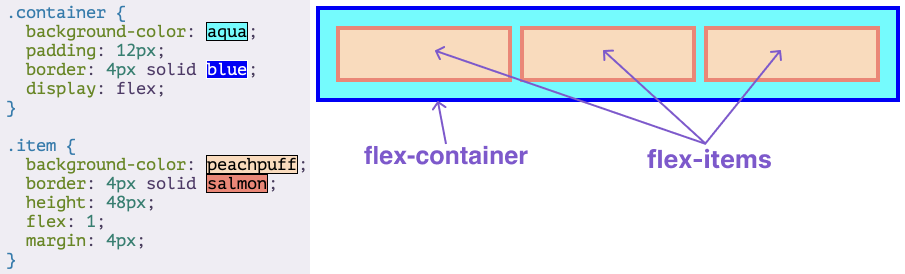

Flexbox Notes:
Back to HTML NotesFlexbox is a way to arrange items into rows or columns. These items will flex (i.e. grow or shrink) based on some rules that you can define.
Flex Containers & Flex Items
Flexbox is not just a single CSS property but a whole tool box of of properties that you can use to put things where you need them. Some of these properties belong on the flex container, while some go on the flex items.
flex container: is any element that has display: flex on it.
flex item: is any element that lives directly inside of a flex container
Any element can be both a flex container and a flex item. You can put display: flex on a flex item and use flexbox to arrange its children.

Creating and nesting multiple flex containers and items is the primary way we use to build up complex layouts.
Flex
The flex declaration is a shorthand for 3 properties that you can set on a flex item. These properties affect how flex items size themselves within their container. These properties are flex-grow, flex-shrink, flex-basis.
When just flex: 1; is put, it equates to flex-grow: 1, flex-shrink: 1, flex-basis: 0. So it would be flex: 1 1 0.
Flex-grow: takes a single number as its value and determines the flex-item's "growth factor". If flex: 1 was applied to every div, then they would all grow the same amount. If instead we added flex: 2 to one of the divs, then that div would grow to 2x the size of the others.
Flex-shrink: similar to flex-grow, but instead sets the "shrink-factor" of a flex item.flex-shrink only ends up being applied if the size of all the flex items is larger than the parent container they are inside.
Flex-basis: sets the initial size of a flex item. Its usual value is flex-basis: auto.
In practise, you will not be using complex values for flex-grow, flex-shrink or flex-basis. You will generally set flex: 1; or if you want to keep certain divs from shrinking then flex-shrink: 0;.
Axes
The default direction for a flex container is horizontal, or row, but you can change the direction to vertical, or column. You can change the direction using flex-direction: column;.
No matter which direction you're using, you need to think of your flex-containers as having 2 axes: the main axis and the cross axis. It is the direction of these axes that changes when the flex-direction is changed. In most cases, row puts the main axis horizontal (left-to-right), and column puts the main axis vertical (top-to-bottom)
Putting the shorthand flex: 1 wont work when flex-direction is set to column.